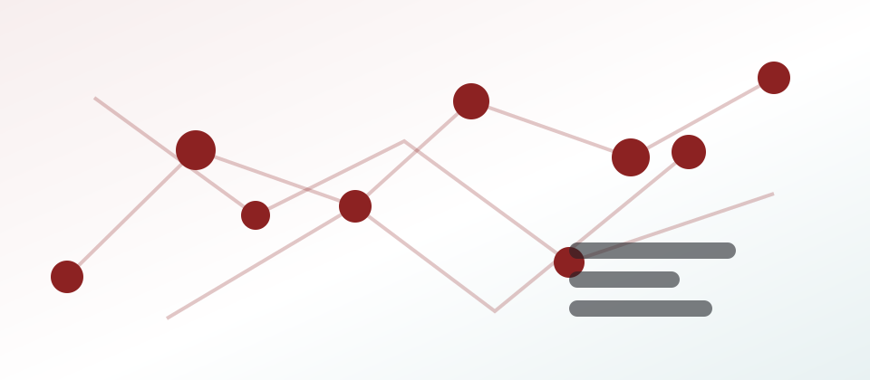

2023-н.в. · исполнитель
РНФ 24-12-20016: AI-ориентированное открытие калорических и термоэлектрических материалов
Разработка AI-моделей и высокопроизводительного DFT-скрининга для поиска новых калорических и термоэлектрических материалов, включая перспективные сплавы Гейслера с высоким магнитокалорическим эффектом.
PythonPyTorchVASPSPR-KKRDFThigh-throughput screening